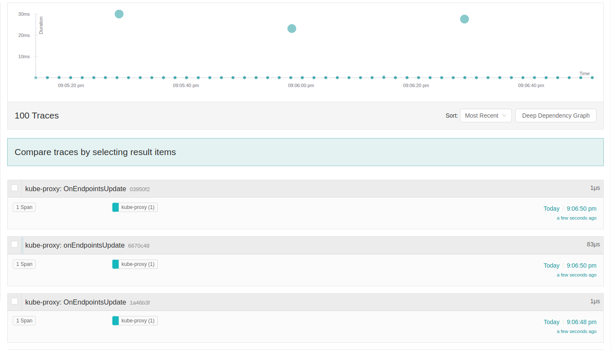
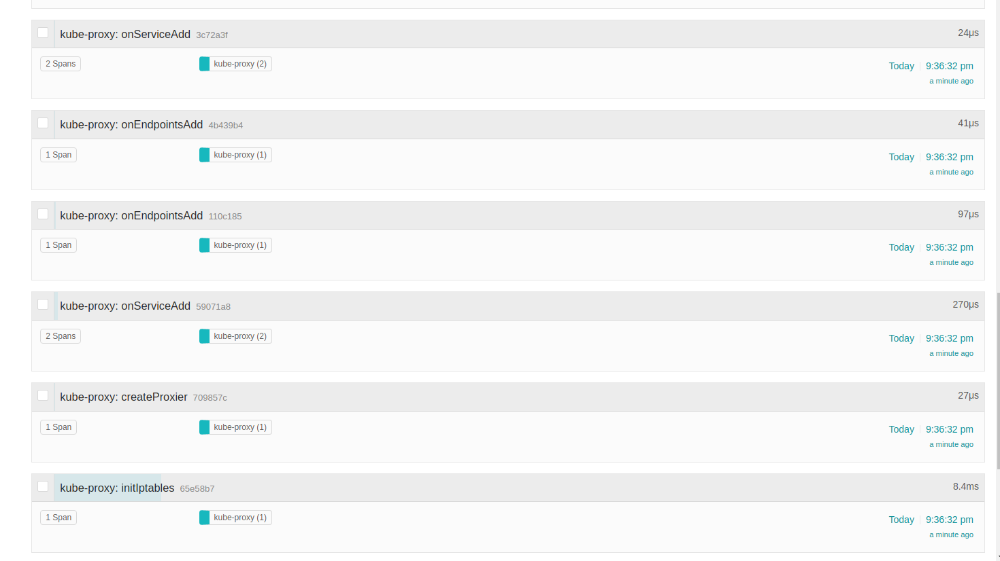
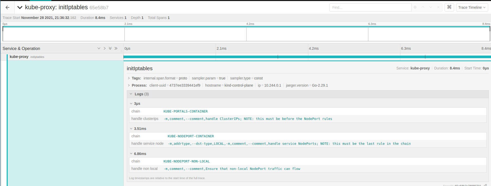
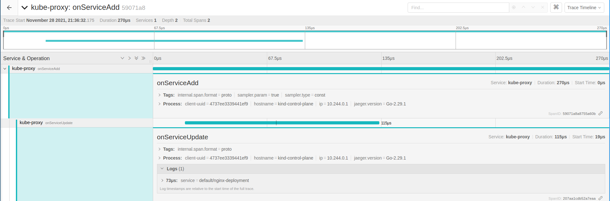
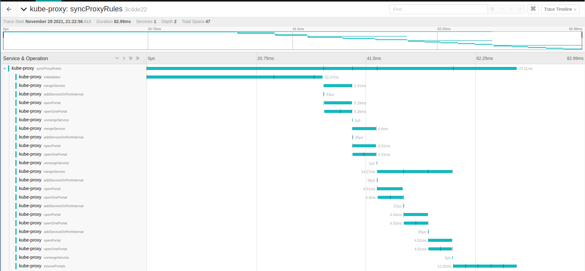
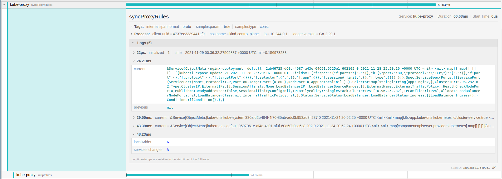
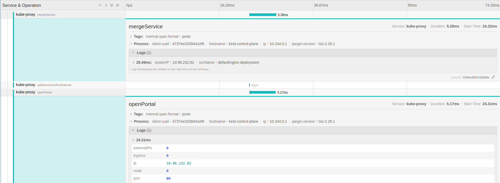
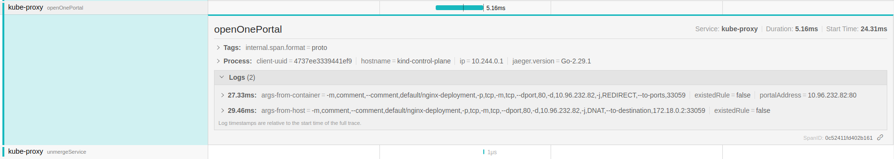
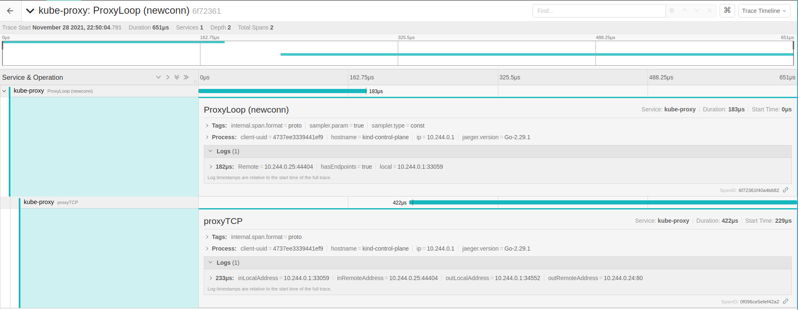

The following post continues a deep dive into kube-proxy modes, taking another approach to tackle the complexity that lies on this kind of system, loop diagrams are an interesting one, and we have used this to analyze the information flow in the Windows userspace mode. To have another holistic view of the entire mode and understand how these parts are interconnected can be a hard task in distributed systems, this is true not only for systems running on different machines, but for ones with parallel and concurrent mechanisms as well.
Let’s use the observability in our favor and trace all methods and functions related to the main path of creating an ClusterIP and deleting it later. Analyzing the tracing on Jaeger [1] can give us the understanding of the stack trace with the complement of important metadata added to span. As more support to document and explain it, we can supplement with time-based graphs like sequence diagrams.
I recommend give a read in the other Windows userspace mode, the idea is pretty similar, and the flow
graph present there provides a nice big picture of what is going on. All the code is under pkg/proxy/userspace.
Starting with some notes in the informers and caches for both services and endpoints. These are the most
important Kubernetes objects that kube-proxy reacts to when actions like Add/Delete/Update happens.
The informer provides a reflector and caches to any object on kubernetes, the signature for these methods
are under pkg/proxy/config/config, and each mode implements a Service handler called by these handle*Service
functions.
// NewServiceConfig creates a new ServiceConfig.
func NewServiceConfig(serviceInformer coreinformers.ServiceInformer, resyncPeriod time.Duration) *ServiceConfig {
result := &ServiceConfig{
listerSynced: serviceInformer.Informer().HasSynced,
}
serviceInformer.Informer().AddEventHandlerWithResyncPeriod(
cache.ResourceEventHandlerFuncs{
AddFunc: result.handleAddService,
UpdateFunc: result.handleUpdateService,
DeleteFunc: result.handleDeleteService,
},
resyncPeriod,
)
return result
}
This is the glue of Kubernetes API and the business logic implemented on each mode. Taking a look closer
on how them react to each event.
These modes use the internal cache for tracking changes in both endpoints and services, and the signature is the same. It will not be detailed right now.
func (proxier *Proxier) OnServiceAdd(service *v1.Service) {
proxier.OnServiceUpdate(nil, service)
}
func (proxier *Proxier) OnServiceUpdate(oldService, service *v1.Service) {
if proxier.serviceChanges.Update(oldService, service) && proxier.isInitialized() {
proxier.Sync()
}
}
func (proxier *Proxier) OnServiceDelete(service *v1.Service) {
proxier.OnServiceUpdate(service, nil)
}
func (proxier *Proxier) OnServiceSynced() {
proxier.mu.Lock()
proxier.servicesSynced = true
proxier.setInitialized(proxier.endpointSlicesSynced)
proxier.mu.Unlock()
// Sync unconditionally - this is called once per lifetime.
proxier.syncProxyRules()
}
This mode instead uses a parallel tracking struct and implements the serviceChange method in the proxy
to save data on them.
type serviceChange struct {
current *v1.Service
previous *v1.Service
}
serviceChanges: make(map[types.NamespacedName]*serviceChange), // datastruct to keep a serviceChangeTracker
func (proxier *Proxier) OnServiceAdd(service *v1.Service) {
proxier.serviceChange(nil, service, "OnServiceAdd")
}
func (proxier *Proxier) OnServiceUpdate(oldService, service *v1.Service) {
proxier.serviceChange(oldService, service, "OnServiceUpdate")
}
func (proxier *Proxier) OnServiceDelete(service *v1.Service) {
proxier.serviceChange(service, nil, "OnServiceDelete")
}
func (proxier *Proxier) OnServiceSynced() {
...
go proxier.syncProxyRules()
}
Curiously windows userspace is simpler than the other methods, basically it does not guarantee the sync of services via a background goroutine, instead it only cleans up the UDP stale connection on this loop as was documented in the last post. The other difference is the mergeService and unmergeService call made directly, other modes use the serviceChange data structure and keep an internal cache of changes with ServiceChangeTracker and EndpointChangeTracker.
func (proxier *Proxier) OnServiceAdd(service *v1.Service) {
_ = proxier.mergeService(service)
}
func (proxier *Proxier) OnServiceUpdate(oldService, service *v1.Service) {
existingPortPortals := proxier.mergeService(service)
proxier.unmergeService(oldService, existingPortPortals)
}
func (proxier *Proxier) OnServiceDelete(service *v1.Service) {
proxier.unmergeService(service, map[ServicePortPortalName]bool{})
}
func (proxier *Proxier) OnServiceSynced() {
}
The cool thing here is to see how them got evolved during time, and the emergence of the design across the modes. Services running the cluster test:
❯ kubectl get services -A [21:36:29]
NAMESPACE NAME TYPE CLUSTER-IP EXTERNAL-IP PORT(S) AGE
default kubernetes ClusterIP 10.96.0.1 <none> 443/TCP 4d3h
default nginx-deployment ClusterIP 10.96.232.82 <none> 80/TCP 83m
kube-system kube-dns ClusterIP 10.96.0.10 <none> 53/UDP,53/TCP,9153/TCP 4d3h
Giving a quick overview in the endpoint signatures, Windows kernel, IPtables and IPVS listen for endpointslices [2] instead of endpoints.
func (proxier *Proxier) OnEndpointSliceAdd(endpointSlice *discovery.EndpointSlice) {
if proxier.endpointsChanges.EndpointSliceUpdate(endpointSlice, false) && proxier.isInitialized() {
proxier.Sync()
}
}
func (proxier *Proxier) OnEndpointSliceUpdate(_, endpointSlice *discovery.EndpointSlice) {
if proxier.endpointsChanges.EndpointSliceUpdate(endpointSlice, false) && proxier.isInitialized() {
proxier.Sync()
}
}
func (proxier *Proxier) OnEndpointSliceDelete(endpointSlice *discovery.EndpointSlice) {
if proxier.endpointsChanges.EndpointSliceUpdate(endpointSlice, true) && proxier.isInitialized() {
proxier.Sync()
}
}
func (proxier *Proxier) OnEndpointSlicesSynced() {
...
proxier.syncProxyRules()
}
As detailed before the round-robing interface gives us a Load balancer for endpoints binded to a service on both cases this is implemented as follows:
func (proxier *Proxier) OnEndpointsAdd(endpoints *v1.Endpoints) {
proxier.loadBalancer.OnEndpointsAdd(endpoints)
}
func (proxier *Proxier) OnEndpointsUpdate(oldEndpoints, endpoints *v1.Endpoints) {
proxier.loadBalancer.OnEndpointsUpdate(oldEndpoints, endpoints)
}
func (proxier *Proxier) OnEndpointsDelete(endpoints *v1.Endpoints) {
proxier.loadBalancer.OnEndpointsDelete(endpoints)
}
Endpoints existent in the test cluster:
❯ kubectl get endpoints -A [21:43:55]
NAMESPACE NAME ENDPOINTS AGE
default kubernetes 172.18.0.2:6443 4d3h
default nginx-deployment 10.244.0.24:80,10.244.0.3:80 84m
kube-system kube-dns 10.244.0.4:53,10.244.0.5:53,10.244.0.4:53 + 3 more... 4d3h
local-path-storage rancher.io-local-path <none> 4d3h
Userspace modes DO NOT support Dual stack.
It’s clear they are different as this point, the spans were inserted across the mais functions on pkg/proxy/userspace,
starting in the main method of proxier = syncProxyRules. You can consider these OnService* and OnEndpoints* methods
entry points that will change the internal tracking data struct with the values sent via the API. The real
deal happens when the user CONNECTS to the ClusterIP (the ones on 10.96.0.0/12), this will be clear later.
After having a local binary compiled with make WHAT=cmd/kube-proxy, I overwrite this binary
in the default image on kproxy like:
FROM k8s.gcr.io/kube-proxy:v1.21.1
COPY ./kube-proxy /usr/local/bin/kube-proxy
Compile and push…
docker build -t kube-proxy . --no-cache
docker tag kube-proxy:latest knabben/kube-proxy:latest
docker push # knabben/kube-proxy...
On your Kind cluster you can first edit the configuration and change mode: userspace in the configmap,
there’s a bug where flags are being ignored when the config file exists, so change the config file only.
kubectl edit -n kube-system configmap kube-proxy
kubectl edit -n kube-system daemonset kube-proxy
image: knabben/kube-proxy
This will restart kube-proxy with the new image, just make sure you can access your Jaeger server, in my case the report server is accessible on Kind via docker network (172.17.0.1:6831).

The Y is the duration in ms of each method call, the span was created in the beginning of the method and closed in the end, attributes were added in the middle and when there’s a span hierarchy a parent span is propagated down the stack. The X axis the time passing. Two continuous events are happening in different frequencies, there’s something to be investigated here. there’s an uncommon event on Endpoints update going on each 2 seconds, this can be seen on endpoint watcher, since it can require some debugging of the controller, lets ignore for now and continue with the kube-proxy analysis in this post, yeah I know. If you went to this path send me an email, and I will put your updates here.
I1129 00:27:12.940632 1 config.go:171] "Calling handler.OnEndpointsUpdate"
I1129 00:27:12.940712 1 log.go:184] Reporting span 3f6423af672e92fc:3f6423af672e92fc:0000000000000000:1
I1129 00:27:12.940729 1 log.go:184] Reporting span 10b4c5990e470261:10b4c5990e470261:0000000000000000:1
I1129 00:27:14.946938 1 config.go:171] "Calling handler.OnEndpointsUpdate"
I1129 00:27:14.947036 1 log.go:184] Reporting span 61893aa75f27cb1f:61893aa75f27cb1f:0000000000000000:1
I1129 00:27:14.947051 1 log.go:184] Reporting span 608f53a74cd73869:608f53a74cd73869:0000000000000000:1
❯ kubectl get endpoints -A -w -o wide [21:27:47]
NAMESPACE NAME ENDPOINTS AGE
default kubernetes 172.18.0.2:6443 4d3h
default nginx-deployment 10.244.0.24:80,10.244.0.3:80 67m
kube-system kube-dns 10.244.0.4:53,10.244.0.5:53,10.244.0.4:53 + 3 more... 4d3h
local-path-storage rancher.io-local-path <none> 4d3h
local-path-storage rancher.io-local-path <none> 4d3h
local-path-storage rancher.io-local-path <none> 4d3h
local-path-storage rancher.io-local-path <none> 4d3h
UPDATE: @jayunit100 had filled an issue - https://github.com/kubernetes-sigs/kind/issues/2453
The big upper circle is the syncProxyRules, and it is what matters for this post.

createProxier returns the main Proxier object and starts the initIptables before, this method ensure
the principal iptables chains exists and the infrastructure we use is set up. From the
comments, this method is idempotent and can be called multiple times (it happens in the sync).
// We match portal rules first, then NodePort rules. For NodePort rules, we filter primarily on --dst-type LOCAL,
// because we want to listen on all local addresses, but don't match internet traffic with the same dst port number.

Following, can be noted serviceAdd and EndpointsAdd events. The informers do not only react to new changes but for
things that already exist in the cluster, so the current state is reflected in the controller when they
bootstrap.

At this point we can confirm the OnServiceAdd using OnServiceUpdate for the service default/nginx-deployment.
Simple but still useful to track these events in real time.

Lets cheat here and go to the first syncProxyRules call, the first run will provide details we are interested,
since all others are just reconciling existent things. There are three services added in the proxy.serviceChanges
by the OnServiceAdd calls.
Looks a lot of different things but they are just marking similar events in the loop, to simplify lets focus in the nginx-deployment.

func (proxier *Proxier) syncProxyRules() {
iptablesInit()
// iterate and merge/unmerge them
for _, change := range proxer.serviceChange {
existingPorts := proxier.mergeService(change.current)
proxier.unmergeService(change.previous, existingPorts)
}
proxier.ensurePortals()
proxier.cleanupStaleStickySessions()
}
As noted the current has the service object and previous is nil for nginx-deployment service:

Getting into the mergeService a lot of things are happening, the main span is still createProxier.
func (proxier *Proxier) mergeService(service *v1.Service) sets.String {
svcName := types.NamespacedName{Namespace: service.Namespace, Name: service.Name}
for i := range service.Spec.Ports {
servicePort = &service.Spec.Ports[i]
serviceName = proxy.ServicePortName{NamespacedName: svcName, Port: servicePort.Name}
proxyPort = proxier.proxyPorts.AllocateNext()
serviceIP := netutils.ParseIPSloppy(service.Spec.ClusterIP)
proxier.addServiceOnPortInternal(serviceName, servicePort.Protocol, proxyPort, proxier.udpIdleTimeout)
proxier.openPortal(serviceName, info)
// creates a new load balancer -> service
proxier.loadBalancer.NewService(serviceName, info.sessionAffinityType, info.stickyMaxAgeSeconds)
}
The addServiceOnPortInternal method starts listening on an internal port (33059 on this random example), dispatching a goroutine to handle
the real connections in the service IP.
go func() {
defer runtime.HandleCrash()
sock.ProxyLoop(service, si, proxier)
}()
For the openPortal -> openOnePortal:

The one can see iptables rules redirecting the service to the internal port in the node IP. Allowing traffic coming from nodes and from containers with these rules. The last functions are not relevant here, they are ensuring the portals are open and cleaning up the stale connections from the cache.
At this point we should have in the node a listen socket for kube-proxy, forwarding the request to the clusterIP and being load balanced to the endpoint list (pods IPs).
root@kind-control-plane:/# lsof -nP -iTCP:33059 -sTCP:LISTEN && iptables-save | grep nginx-deployment && curl 10.96.232.82
COMMAND PID USER FD TYPE DEVICE SIZE/OFF NODE NAME
kube-prox 2060619 root 20u IPv6 38627113 0t0 TCP *:33059 (LISTEN)
-A KUBE-PORTALS-CONTAINER -d 10.96.232.82/32 -p tcp -m comment --comment "default/nginx-deployment" -m tcp --dport 80 -j REDIRECT --to-ports 33059
-A KUBE-PORTALS-HOST -d 10.96.232.82/32 -p tcp -m comment --comment "default/nginx-deployment" -m tcp --dport 80 -j DNAT --to-destination 172.18.0.2:33059
<!DOCTYPE html>
<html>
<head>
<title>Welcome to nginx!</title>
<style>
body {
width: 35em;
margin: 0 auto;
font-family: Tahoma, Verdana, Arial, sans-serif;
}
</style>
</head>
<body>
<h1>Welcome to nginx!</h1>
<p>If you see this page, the nginx web server is successfully installed and
working. Further configuration is required.</p>
<p>For online documentation and support please refer to
<a href="http://nginx.org/">nginx.org</a>.<br/>
Commercial support is available at
<a href="http://nginx.com/">nginx.com</a>.</p>
<p><em>Thank you for using nginx.</em></p>
</body>
</html>
Not cool enough? Hitting the service from 10.244.0.25/24 pod ip, gives us the byte copy tracing…

[1] https://www.jaegertracing.io/
[2] https://kubernetes.io/blog/2020/09/02/scaling-kubernetes-networking-with-endpointslices/